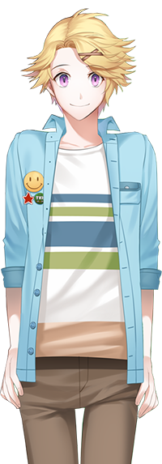

Characters
Main Characters

Yoosung Kim
Sophomore college student, avid LOLOL player.
Available on Casual Route.
"Are you Rika?"
Other Characters
Guests
In Mystic Messenger, it is considered part of the player's job to invite guests to come to the party. The guests' attendance will depend on the player's responses to their emails.
There are currently 110 guests in Mystic Messenger, with some only appearing in certain routes. Can you find them all?